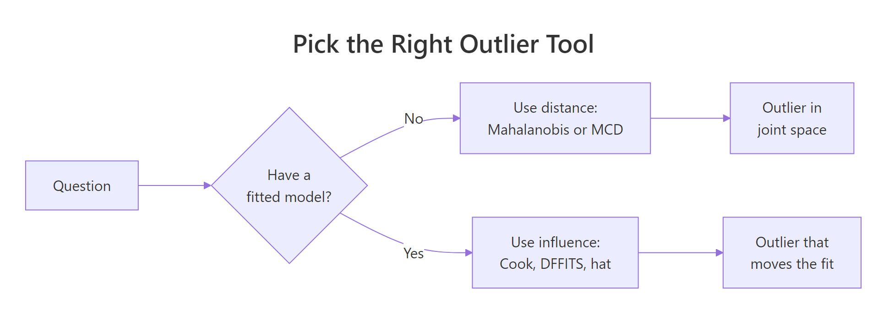
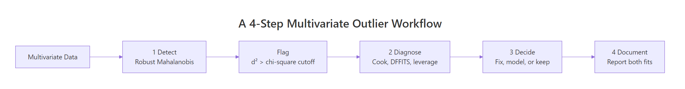

Multivariate Outlier Detection in R: Mahalanobis Distance & Influence
Multivariate outlier detection in R uses the Mahalanobis distance, or its robust MCD variant, to flag points that are unusual given the joint behaviour of several variables, and influence diagnostics like Cook's distance, leverage, and DFFITS to single out the rows that actually distort a regression fit.
Why do multivariate outliers slip past univariate checks?
A point can sit comfortably inside every column's boxplot and still be deeply unusual when the columns are looked at together. That is the gap univariate filters cannot see, and it is exactly where multivariate outlier detection earns its keep. Let us load mtcars, score each car against the joint behaviour of mpg, hp, and wt, and check which rows the standard z-score or IQR test would have let through.
We pick three correlated columns, compute the centroid and covariance, then ask base R's mahalanobis() for the squared distance of every car from that centroid in the correlation-aware metric. Higher numbers mean stranger cars.
The Maserati Bora is in a class of its own at d² ≈ 16, mostly because its 335 hp combined with relatively low weight is rare given how those columns usually move together. The interesting result is the Toyota Corona: it is not a standout in any single column (mpg = 21.5, hp = 97, wt = 2.46), so univariate filters give it a clean bill of health. Mahalanobis flags it because the combination of those values is unusual relative to the rest of the fleet.
Try it: Use airquality, drop incomplete rows with na.omit(), then compute squared Mahalanobis distances on Ozone, Wind, and Temp. Sort the result and report the three most extreme row numbers.
Click to reveal solution
Explanation: na.omit() keeps only complete cases (Mahalanobis cannot handle NAs), and mahalanobis() returns the squared distance of every row from the centroid in the covariance metric.
How do you compute Mahalanobis distance and apply a chi-squared cutoff?
Knowing the rank order is useful, but a real workflow needs a yes-or-no rule: which rows do we treat as outliers? The standard answer comes from a clean piece of theory. Under multivariate normality, the squared Mahalanobis distance of a random point follows a chi-squared distribution with p degrees of freedom, where p is the number of variables.
Formally, the squared Mahalanobis distance of point $x$ to centre $\mu$ with covariance $\Sigma$ is:
$$d_M^2(x) = (x - \mu)^\top \, \Sigma^{-1} \, (x - \mu)$$
Where:
- $d_M^2(x)$ = the squared Mahalanobis distance
- $\mu$ = the centre (column means)
- $\Sigma$ = the covariance matrix
- $\Sigma^{-1}$ = the inverse covariance, which standardises and decorrelates the variables
Because $d_M^2 \sim \chi^2_p$ under multivariate normality, we can ask R for the 97.5% quantile of that chi-squared and call any row above it an outlier.
At the 2.5% tail we flag exactly one car, the Maserati Bora. That single result is suspicious in itself: classical Mahalanobis with a tight cutoff is conservative, and we will see in a moment that this conservatism is not a feature, it is a bug.
qchisq(0.975, p) is the fast 2.5%-tail filter for joint outliers. Replace 0.975 with 0.999 for a stricter rule when you have many rows, or 0.95 for a looser screen on small samples. Always use degrees of freedom equal to the number of variables, not the number of rows.Try it: Tighten the cutoff to the 0.999 quantile and recount the classical outliers in mtcars_mv.
Click to reveal solution
Explanation: The Maserati's d² of 16.13 is below the 0.999 cutoff (≈ 16.27), so the strict rule keeps it. Tighter cutoffs reduce false positives but can miss real outliers, especially in small samples.
Why does classical Mahalanobis fail with masking and swamping?
Classical Mahalanobis has a quiet failure mode: it uses the mean and covariance of the entire sample, including the outliers, to score the outliers. The outliers therefore pull the centroid towards themselves and inflate the covariance in their direction, which makes them look closer to centre than they really are. Statisticians call that masking. The same shifted estimates also push otherwise innocent points further from centre, which is swamping.
We can show both effects with a controlled experiment. Inject four extreme rows into the mtcars subset and rerun the classical calculation.
This is the punchline. Each injected row was deliberately chosen to be impossible (high mpg, very high horsepower, sub-1.6 ton weight, all at once), yet classical Mahalanobis gives them d² values around 5, well below the 9.35 cutoff. Together they have shifted the centroid and stretched the covariance enough to hide themselves. That is masking, with a side order of swamping for the genuine cars now sitting closer to the inflated boundary.
Try it: Recompute the four injected rows' classical d² but use the clean centroid ctr and covariance S from earlier (estimated without contamination). They should jump above the cutoff.
Click to reveal solution
Explanation: When the centroid and covariance are estimated from clean data, the contaminated rows have huge distances, exactly as expected. The masking effect comes entirely from polluted parameter estimates, which motivates the robust approach below.
How does robust Mahalanobis (MCD) fix masking?
The fix is simple in concept: estimate the centroid and covariance from a clean subset of the data, then score everyone against that clean base. The Minimum Covariance Determinant (MCD) estimator does exactly that. It searches for the subset of h observations whose covariance has the smallest possible determinant, on the theory that genuine data is more concentrated than contamination, then uses that subset's mean and scatter as the location and shape of the bulk of the data.
In R, MASS::cov.rob() with method = "mcd" returns the robust centre and covariance. We plug them straight into mahalanobis() to get robust squared distances.
Every injected row now has a robust d² far above the 9.35 cutoff, ranging from 71 to 100. The fifth flagged row is the Maserati Bora, which was already extreme. Masking is gone; the robust estimator never let the contamination near its centroid in the first place.
A second tool from this approach is the distance-distance (DD) plot, which puts classical d² on the x-axis and robust d² on the y-axis. Points along the 45-degree line behave the same way under both methods. Points far off the line, especially high on the y-axis but low on the x-axis, are the masked outliers.
The four FAKE_* rows sit far above the horizontal cutoff line but to the left of the vertical one, which is the visual signature of masking: classical says "fine," robust says "very far." That gap is the diagnostic value of the DD plot.
Try it: Re-fit cov.rob() with quantile.used = 28 (almost the full sample) on mtcars_dirty. Notice how the breakdown protection weakens as the trimming shrinks.
Click to reveal solution
Explanation: Larger quantile.used means MCD includes more rows in its base estimate, including some contamination, so the distances shrink. The default (about half the sample) gives the strongest protection.
How do influence diagnostics reveal outliers that distort a regression?
Joint-space outliers are not the same as outliers that hurt a regression model. A car can sit far from the centroid of (mpg, hp, wt) and yet land exactly on the line that a linear model would draw, in which case removing it changes nothing. The reverse is also true: a row can be unremarkable in joint space and still tilt the fitted slope.
Influence diagnostics answer the regression-specific question. The three you reach for first are:
- Leverage (
hatvalues()): how unusual the predictor pattern is. High leverage means potential influence. - Cook's distance (
cooks.distance()): how much every coefficient changes when the row is dropped. Combines residual size and leverage. - DFFITS (
dffits()): how much the row's own fitted value changes when the row is dropped.

Figure 1: When to reach for distance-based versus influence-based outlier tools.
Cook's distance for observation $i$ is:
$$D_i = \frac{(\hat{y} - \hat{y}_{(i)})^\top (\hat{y} - \hat{y}_{(i)})}{p \, \hat{\sigma}^2}$$
Where:
- $D_i$ = Cook's distance for row $i$
- $\hat{y}$ = fitted values from the full model
- $\hat{y}_{(i)}$ = fitted values when row $i$ is left out
- $p$ = number of estimated coefficients
- $\hat{\sigma}^2$ = residual variance estimate
A common rule of thumb flags any row with $D_i > 4/n$. Let us put it to work on a familiar regression.
Three rows clear the 4/n threshold. The Chrysler Imperial stands out: it is heavy (5.3 tons) yet has only 230 hp and gets 14.7 mpg, a combination the model under-predicts, so leaving it in pulls the slope of wt down. Notice that none of these three appeared in the Mahalanobis short list. They are influential precisely because the residual is large given their leverage, not because their predictors are unusual.
Now we see a different set. The Maserati and the heavy luxury cars have the most unusual predictor patterns, so they have high leverage. Cook combines leverage with residual size, and only the Chrysler Imperial overlaps with the leverage list, because it is both unusual and poorly predicted.
For a single-shot summary, base R offers influence.measures(), which reports DFBETAS for every coefficient, DFFITS, the covariance ratio, Cook's distance, and the hat value, and asterisks the rows it considers influential by all five measures.
The combined report tags six rows. The Chrysler Imperial appears in both the Cook short list and the influence summary, which is the strongest signal that it deserves a closer look. The Maserati Bora, by contrast, is only flagged because of leverage, so it is unusual but not necessarily harming the fit.
Try it: Compute DFFITS for the same fit and identify rows that exceed the rule-of-thumb cutoff $2\sqrt{p/n}$.
Click to reveal solution
Explanation: DFFITS measures how much the row's own fitted value changes when the row is dropped, scaled by an estimate of standard error. The $2\sqrt{p/n}$ cutoff is conservative; the absolute value matters because DFFITS is signed.
What workflow turns detection into a defensible decision?
Detection alone is not the goal. What you need is a sequence that turns a flag into a decision your reviewer (or future self) can defend. Four steps cover almost every case.

Figure 2: A four-step workflow for moving from detection to a defensible decision.
- Detect with a robust method (MCD distance, then Cook's distance if a model is in scope). Use the chi-squared cutoff for distance and the 4/n cutoff for Cook.
- Diagnose each flagged row. Is it a data-entry error, a member of a different population, or a rare-but-real observation that the model should learn to handle?
- Decide the action. Fix the error, drop the wrong-population rows, or refit with a robust regression. If unsure, fit both models and report the difference.
- Document every choice. Reviewers should see which rows were flagged, by which method, what action was taken, and how the headline coefficients moved.
A small audit helper bundles the detection half of the workflow into a single call so you do not have to retype the chain every time.
The overlap is the most actionable subset: rows that are unusual in joint predictor space and move the regression. In mtcars that is the Chrysler Imperial. The MCD-only rows are extreme observations the model handles fine; the Cook-only rows are influential despite being unsurprising in predictor space, often because of an unusually large residual.
Try it: Call audit_outliers(mtcars_mv) without a model. The Cook output should be empty.
Click to reveal solution
Explanation: When model = NULL, the helper skips Cook's distance and only returns the MCD flags. That makes the same function reusable in pure unsupervised settings.
Practice Exercises
Exercise 1: MCD versus classical on iris (without Species)
Drop the Species column from iris, run cov.rob(method = "mcd") and classical Mahalanobis at the 0.975 chi-squared cutoff, and save the indices flagged only by the robust method to my_robust_idx. The robust method should catch points that the classical one masks because of the three-cluster structure.
Click to reveal solution
Explanation: Classical Mahalanobis uses one centroid for all three Iris species, so each species' bulk hides itself and only five extreme rows clear the cutoff. MCD locks onto the densest sub-cloud (one species, mostly), so points from the other two species look far off and the flag count jumps to 39. The 35 newly visible rows are exactly the ones the classical method masked.
Exercise 2: Rows flagged by MCD and Cook in mtcars
Fit lm(mpg ~ hp + wt + qsec, data = mtcars). Compute MCD-based Mahalanobis distances on mtcars[, c("hp", "wt", "qsec")] with a 0.975 cutoff and Cook's distance with a 4/n cutoff. Save the row names that are flagged by both methods to my_dual_outliers.
Click to reveal solution
Explanation: The intersection gives the rows that are both unusual in predictor space and influential on the fit. In mtcars with this model, only the Maserati Bora is in both lists, which makes it the highest-priority row for inspection.
Putting It All Together
A complete pass on the swiss fertility data, end to end. We detect, fit, diagnose, refit without the worst rows, and compare the slopes side by side.
Removing the three dual-flagged regions changes the Agriculture slope by roughly half and pushes Education further negative, which is the kind of movement you must report. A defensible analysis would publish both fits with a sentence explaining which rows were dropped and why, leaving the reader to judge whether the trimmed result is the right answer or whether the underlying data needs another look.
Summary
| Method | What it answers | Cutoff | When to reach for it |
|---|---|---|---|
mahalanobis() (classical) |
Is this row unusual in joint space? | $\chi^2_p$ at 0.975 | Quick screen on clean data |
cov.rob(method = "mcd") + mahalanobis() |
Same, but robust to contamination | $\chi^2_p$ at 0.975 | Default for any real dataset |
cooks.distance(fit) |
Does this row move the regression? | $4 / n$ | Once a model is fit |
hatvalues(fit) |
Is this row's predictor pattern unusual? | $2p / n$ | High-leverage candidates |
dffits(fit) |
Does this row change its own prediction? | $2\sqrt{p/n}$ | Cross-check on Cook |
influence.measures(fit) |
All of the above in one report | Built-in flags | Final sanity check |
The two halves of the toolkit are complementary, not interchangeable. Distance methods tell you about the data. Influence methods tell you about the model. A point flagged by both is the one that most often needs a decision; a point flagged by only one usually does not.
References
- Leys, C., Klein, O., Dominicy, Y., & Ley, C. (2018). Detecting multivariate outliers: Use a robust variant of the Mahalanobis distance. Journal of Experimental Social Psychology, 74, 150–156. Link
- Rousseeuw, P. J., & Van Driessen, K. (1999). A Fast Algorithm for the Minimum Covariance Determinant Estimator. Technometrics, 41(3), 212–223. Link
- Cook, R. D. (1977). Detection of Influential Observation in Linear Regression. Technometrics, 19(1), 15–18. Link
- R Core Team.
?influence.measures. R documentation. Link - R Core Team.
?mahalanobis. R documentation. Link - Venables, W. N., & Ripley, B. D. (2002). Modern Applied Statistics with S, 4th Edition. Springer. Link
- Hubert, M., Rousseeuw, P. J., & Van Aelst, S. (2008). High-Breakdown Robust Multivariate Methods. Statistical Science, 23(1), 92–119. Link
- easystats.
check_outliers()reference. Link
Continue Learning
- Multivariate Statistics in R: Distances, Mahalanobis, and Hotelling's T², the parent tutorial that introduces the Mahalanobis metric and Hotelling's T² test.
- Outlier Detection in R, the univariate methods (IQR, Z-scores, boxplots) for the column-by-column case.
- Multivariate Normal Distribution in R, the distribution that justifies the chi-squared cutoff used throughout this post.